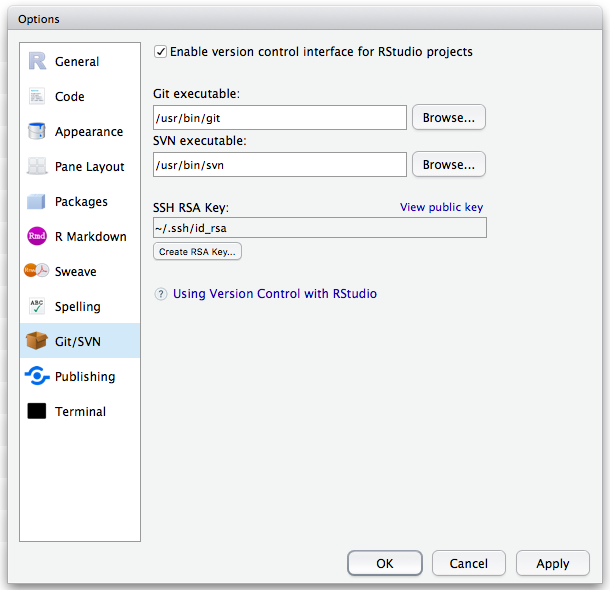
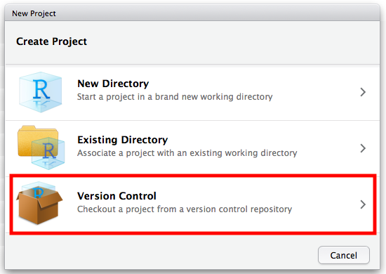
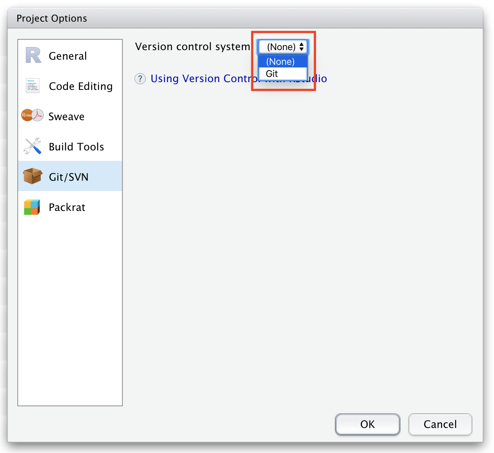
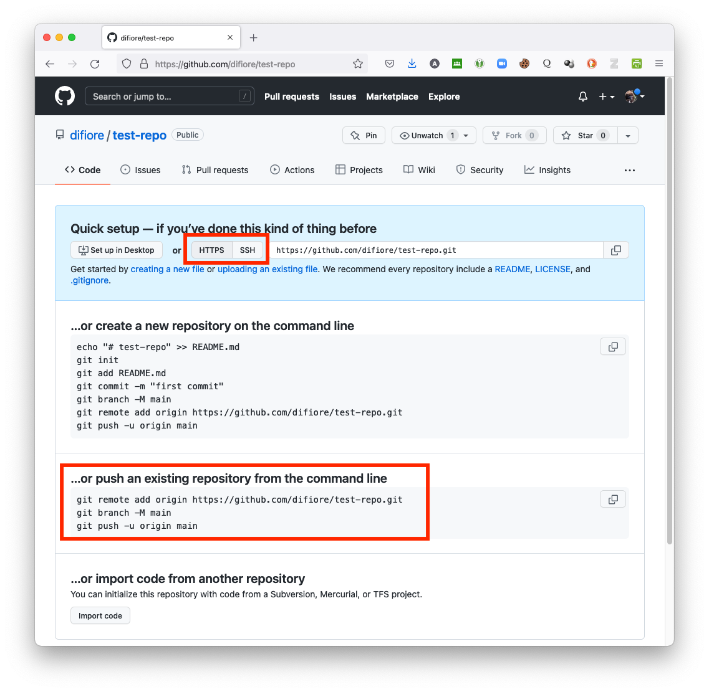
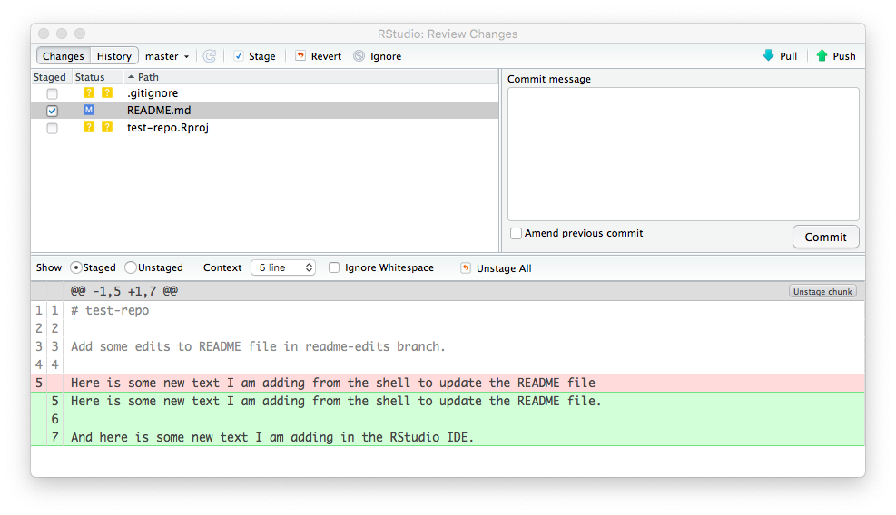
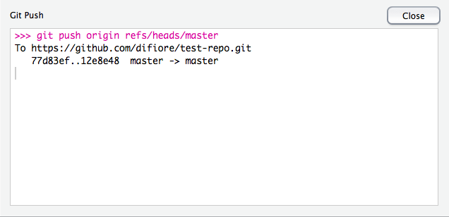

6 Reproducible Research
6.1 Objectives
In the last module, we introduced the concept of version control and looked at tools for interfacing between between a repository maintained remotely on GitHub and a local repository, using the version control system, git. Now, we are going to learn how we can use RStudio to manage the git/GitHub version control workflow. An additional objective of this module is to promote the ideas of reproducible research practice and literate programming by introducing you to RMarkdown and Quarto, which are both plain-text document formats that allow us to mix text and code in a flexible way and to generate a variety of nicely rendered outputs (e.g., websites, books, PDFs, presentations, and other media formats).
6.2 Preliminaries
As a first step, if you haven’t done so already in Module 02, open the Preferences pane in RStudio (MacOS), go to the Git/SVN section, and make sure that the checkbox “Enable version control interface for RStudio projects” is selected. Alternatively, you can access the same dialog box by choosing Global Options from the Tools menu (MacOS and PC).
In this dialog box, also confirm that the path to your git executable is filled in and correct. If you have already successfully installed git, this should be filled with something like “/usr/bin/git” (on MacOS or Linux) or “C:\Program Files\Git\bin\git.exe” on Windows). If it is not, then you can try troubleshooting by following the recommendations in Chapters 13 and 14 of the web book Happy Git and GitHub for the useR.
6.3 Backstory
Reproducible research refers to the practice of conducting and disseminating scientific research in a way that makes data analysis (and scientific claims more generally) more transparent and repeatable Academics already have means of sharing methods and results generally, through publications (although perhaps typically in less than complete detail), and we can share the data on which those our analyses are based by depositing them in some form of online repository (e.g., via “supplementary information” that accompanies an article or by posting datasets to repositories like the Dryad Digital Repository or Figshare.
But how do we share the details of exactly how we did an analysis? And how can we ensure that it is possible for us to go back, ourselves, and replicate a particular analysis or data transformation? One solution is to integrate detailed text describing a workflow and analytical source code (such as R scripts) together in the same document.
This idea of tying together narrative, logic, specific code, and data (or references to them) in a single document stems from the principle of literate programming developed by Donald Knuth. Applied to scientific practice, the concept of literate programming means documenting both the logic behind and analysis and the code used to implement that analysis using computer software. This documentation allows researchers to return to and re-examine their own thought processes at any later time, and also allows them to share their thought processes so that others can understand how an analysis was performed. The upshot is that our scholarship can be better understood, recreated, and independently verified.
This is exactly the point of an RMarkdown or Quarto document and of other, similar document formats (e.g., R Notebooks, iPython Notebooks, or Julia Notebooks).
So, how does this work?
First, as we saw in the last module, Markdown, is simply a formal way of styling a plain text document so that it can be easily rendered into HTML or PDF files for sharing or publishing. It is based on using some simple formatting and special characters to tag pieces of text such that a parser knows how to convert a plain text document into HTML or PDF. This link takes you to a classic description of Markdown, its syntax, and the philosophy behind it written by John Gruber, Markdown’s creator. There are now several different “dialects” of Markdown that have been developed, derived from Gruber’s original suggestions, including a specific one used on GitHub called “GitHub Flavored Markdown”, or GFM. A guide to this dialect is provided as a PDF here and is available online at this link.
RMarkdown and Quarto documents are very similar extensions of standard Markdown that allows you to embed chunks of R code (or code blocks of other programming languages, e.g., Python, Latex), along with additional parsing instructions and options for running code, in a plain text file. During the parsing and rendering (or “knitting”) stage, when the text file is being converted to HTML or PDF format, the output of running the embedded code can also be included.
RMarkdown uses the package {knitr} to produce intermediate files that can then be translated into a variety of formats, including HTML, traditional Markdown, PDFs, MS Word documents, web presentations, and others. A cheatsheet on RMarkdown syntax (which, again, is very similar to Markdown) can be found here. Quarto documents use a separate piece of independent software, quarto (along with {knitr}, in some cases), to do the same thing. An overview and useful definitive guide to all you can do with Quarto can be found here
It is important to stress that Markdown (“.md”), RMarkdown (“.Rmd”) and Quarto (“.qmd”) files ARE JUST PLAIN TEXT files! They are easy to work with, easy to share, easy to edit, easy to put under version control, and robust to changes in proprietary file formats!
As a demonstration of reproducible research workflow and best practices, we are going to create a new R project and corresponding repository that we will track with version control using git. Within that project, we then are going to create an RMarkdown document in which you can take notes or practice coding during class today.
As we have seen already, git, at its heart, is a command-line tool, but both local (on your computer) and hosted (e.g., on GitHub) git repositories can be managed using a dedicated git client GUI, such as GitHub Desktop, GitUp, GitKraken, SourceTree, or a host of others. Importantly for us, though, RStudio is designed to also function as a powerful git client. We will explore several ways of setting up RStudio to manage both local and remote copies of a git repository and of keep them in sync.
NOTE: See also Chapters 8 and 12 of the web book Happy Git and GitHub for the useR for more information on managing git and GitHub through RStudio.
6.4 Organizing Work with R Projects
The easiest way to get RStudio to play nicely with git and GitHub for version control - and a recommended best practice - is to organize your work in RStudio using projects. You can think of an R project as a convenient workspace that is associated with its own working directory, data files, scripts, images, history log, etc. We might, for example, create a separate R project for each manuscript that we are working on.
NOTE: Not surprisingly, the idea of an RStudio “project” (i.e., an organizing workspace and its associated files) and a “repo” (a directory that is under version control) go together nicely. It is, however, totally possible to create RStudio projects without having them be under version control, and it is also quite possible to use git or another VCS to track changes to files in a directory without there being an associated RStudio project!
Basically, creating an RStudio project means creating a special text file (“
Workflows for Creating Projects
For the sake of security, reproducibility, and collaboration, it makes a lot of sense for us to have all of our data science/data analysis projects both be under version control (e.g., using git) and hosted remotely on a secure and reliable platform (e.g., GitHub) that we and collaborators can access from different locations. There are multiple ways we can accomplish this.
For example, we could begin by setting up a new repository remotely, as we did in Module 05, and then “clone” it to our local computer and establish it as a version-controlled RStudio project. Alternatively, we could first create a new version-controlled RStudio project in a local directory and then push it up to GitHub or some other hosting site. [For either of these scenarios, we could also begin with either a new (empty) repository or with one that already has files in it.] We will go through all of these methods below, but I personally think the first process - beginning with a remote repository - is the easiest and most intuitive, but I describe all of these approaches further below.
Method 1: Create a new RStudio project by cloning from a remote repository
Perhaps the easiest way to get RStudio working nicely with git and GitHub is by creating a new repository on GitHub and then “cloning” this remote repository to a local computer and placing it under version control.
NOTE: Before completing the following, you should make sure to delete any existing local version of the remote repository that you might have cloned previously, e.g., by moving it to the
Trashon MacOS or theRecycle Binon Windows. This is because if you try to clone a remote repository into an existing directory, you will get an error!
Step 1
- First, as described in Module 05, go to your user profile in GitHub and create a new repository.
You will need to specify a repository name (with no spaces), whether it is a public or private repository, and whether to initialize the repository with one or more files already in it. I recommend initializing with both a “README” file and with a “.gitignore” file. You can also choose to use an R template to follow for the “.gitignore” file. The “.gitignore” file is simply a text document the provides git with a list of files that you ask it NOT to track changes to. These are typically either very large files (e.g., data files) or various hidden files that are either unnecessary or undesirable to track every single change to.
- Once your repository is created, go to the green “Code” popdown menu and click the clipboard icon to copy the repository’s HTTPS URL. This is the same process we used in Module 05 for cloning a remote repository, and the URL is likely to be
https://github.com/followed by<your user name>/<your repository name>).
Step 2
- From the File menu in RStudio, choose New Project and select to “Checkout a project from a version control repository”…
NOTE: This step can also be done from the popdown menu located at the top right of the RStudio IDE.

- Choose the top item, “Clone a project from a Git repository”…
- In the subsequent dialog box, paste in the “Repository URL:” you copied in Step 1.
You can choose what parent folder to clone the repository into using the “Create project as a subdirectory of:” field (e.g., ~/Development/Repos). In most cases, the “Project directory name:” field will be filled in automatically, as the name of the remote repository you are cloning.
Hitting the “Create Project” button will download the repository from GitHub into a new directory on your local computer. RStudio will close and reopen, after which the working directory will be set to the new local repository directory, which you can confirm by typing getwd() at the R console prompt. The local directory is now set up to be tracked by git on your local computer and should be connected to GitHub.
Selecting the Files tab in RStudio will then show you all of the files in the newly created local repository, which should now contain a “.gitignore” file and an “.Rproj” file with the name of your project (e.g., “test-repo.Rproj”), in addition to the “README.md” file you created on GitHub.
You should now also see a “Git” tab in the upper right pane of the RStudio IDE, and that tab should list the “.Rproj” file associated with the status ?, indicating that it has not yet been added, committed, or synced with the remote repository. The other two files (“.gitignore” and “README.md”) are already in sync.

Other Notes
This process works identically if you want to clone a repo from GitHub that already has other files in it besides “.gitignore” and “README.md”. In that case, RStudio will simply just create the “.Rproj” file and modify any existing “.gitignore” file to also include one or more other files that it recommends that git not track, e.g., “.Rproj.user”. The new “.Rproj” file and modified “.gitignore” file, which were created locally, should appear under the “Git” tab with with the status ? until you add, commit, and push them.
The process also works the same if you set up an empty repo on GitHub, in which case you will have seen the window below immediately upon creating the repository:
Here, grabbing the URL from the “Quick setup” section and using that to set up a new project is RStudio is exactly the same process as we followed above.
NOTE: You could also, in a terminal window, navigate to where you want the remote project to be cloned and follow either the “… or create” or “… or push” instructions listed. Doing so will link a local directory to the remote repo you created on GitHub BUT you will then not have created that as an RStudio project and would need to follow up with other instructions below about creating a new project from an existing local directory.
Method 2: Creating a new RStudio project under version control in a new directory
- In RStudio, select File > New project and click
New Directory.
- Choose the project type as “New Project”, then name the directory and choose where you would like it to be stored, checking the box marked
Create a git repository, and pressing “Create Project”.
- RStudio will create a new directory for you with an “.Rproj” file (with the name of your project) and a “.gitignore” file inside of it. This directory is now being tracked by git and RStudio. You can now create and edit files in this new directory and stage and commit them locally directly from RStudio. See the section below on “Modifying Files Locally” in RStudio.
NOTE: It is important to remember that this project is still only under local version control… you will not yet be able to push changes up to GitHub. To do that, see the section below on “Connecting a Local Repo to GitHub”.
Method 3: Creating a new RStudio project in an existing directory
If you have an existing directory on your local computer that is already under git version control, then you can simply create a new RStudio project for that directory, and version control features will be automatically enabled. To do this:
- Execute the New Project command (from the File menu)
- Choose to create a new project from an
Existing Directory
- Select the appropriate directory and then click Create Project
New “.Rproj” and “.gitignore” files will be created inside of that directory, and RStudio’s version control features will then be available for that directory. Now, you can edit files currently in the directory or create new ones, as well as stage and commit them to the local repository directly from RStudio. See the section below on “Modifying Files Locally” in RStudio.
If you create a new project for a directory that was not already under version control, you can enable version control within RStudio by choosing Tools>Project Options to open the Project Options dialog box. Once there, go to the Git/SVN section and choose “Git” from the “Version control system” popdown menu, and then confirm that you want to set up version control for the project. You can also enable version control for a new project in a directory not formerly under version control by running the use_git() command from the {usethis} package. In either case, again, new “.Rproj” and “.gitignore” files will be created inside that directory, and RStudio’s version control features will then be available.

NOTE: Again, it is important to remember that local projects created via Method 2 and Method 3 are still only under local version control… you will not yet be able to push any additional files you add to the project directory or changes to local files up to GitHub. To do that, see the section below on “Connecting a Local Repo to GitHub”.
Connecting a Local Repo to GitHub
To create a new remote repository on GitHub into which you can push the contents of an existing local repository, e.g., one created by Method 2 or Method 3 above, so that it is also backed-up off site and accessible to you or collaborators working at different locations, you have a couple of different options (see also Chapter 17 of the web book Happy Git and GitHub for the userR).
Option 1: Use the {usethis} package to create a new remote repository on GitHub from within RStudio
Step 1
Configure a GitHub Personal Access Token (PAT):
- Login to your GitHub account and go to the Settings tab. Then select
Developer Settingsand thenPersonal Access Tokens. - Select
Generate new tokenand give it a nickname that reminds you of the intended purpose (e.g., “Access GitHub from RStudio”). - Pick a scope that confers the privileges you need, e.g.,
repo, and then press the green “Generate Token” button. - The PAT will be displayed. It is a string of 40 random letters and digits. Copy this string to the clipboard.
- Enter the PAT in your “.Renviron” file as a line that looks like this:
GITHUB_PAT=<your token>(not in quotation marks). - The “.Renviron” file is a hidden file located in a user’s home directory that can be used to set some default parameters for new R sessions. You can load and edit this with a function from the {usethis} package. At a console prompt, type
usethis::edit_r_environ(). Your “.Renviron” file should open up in the RStudio editor. Add your theGITHUB_PAT=<your token>line as above, save and close the file. Be sure to put a line break at the end! - Restart R (Session > Restart R in the RStudio menu bar), as environment variables are loaded from “.Renviron” only at the start of an R session. Check that the PAT is now available:
Sys.getenv("GITHUB_PAT"). You should see your PAT print to screen.
- Login to your GitHub account and go to the Settings tab. Then select
Step 2
Create a remote repository on GitHub and push a local repository to it:
- Open the RStudio project that you want to create a remote repository for. This project needs to be under version control already and include at least one commit.
- At the R console prompt within the project’s working directory, type
usethis::use_github(protocol="https") - Answer the question about whether the suggested name for the remote repository is adequate.
- This should create a new repository on GitHub, add it as a remote
origin/main, set up a tracking branch, and open it in your browser.
From within RStudio, you can now add or edit files to the project, locally commit any changes you make to those files, and push them up to GitHub as described above.
Option 2: Set up a dummy remote repository on GitHub and push to it from within RStudio
- Go to the GitHub website and create a new, empty repository. You can use the same name as that of the RStudio project you want to push up, or you can create a different one.
NOTE: In setting up the repository on GitHub, you should choose not to initialize the remote repository you are going to be pushing to with either a “README” or “.gitignore” file!
- From the Git tab in RStudio, select the New Branch icon.
- Click “Add remote”, paste in the URL for your dummy remote repository in the text field, and type in “origin” for the name of the remote branch.
- Click “Add”. We should be back in the “New Branch” dialog box. Enter
mainas the branch name (to push from the localmainbranch to a remotemain), and make sure “Sync branch with remote” button is checked. - Click “Create” and in the next dialog box, choose “Overwrite”. This should push your local repository
mainbranch up to the remotemainbranch.
Option 3: Set up a dummy remote repository on GitHub and push to it from a terminal shell
- As in Option 2, go to the GitHub website and create a new, empty repository. You can use the same name as that of the RStudio project you want to push up, or you can create a different one.
NOTE: Here, again, you should choose not to initialize the remote repository you are going to be pushing to with either a “README” or “.gitignore” file!
- From the next screen, select the desired transfer protocol you want to use under the
Quick setup...option at the top (HTTPS or SSH). Then, scroll down to the option:...or push an existing repository from the command line.

- Copy the lines of code listed there and then return to RStudio.
- In RStudio, open the project that you want to push to GitHub and click Tools > Terminal > New Terminal or Tools > Shell… to open a terminal window. Alternatively, open a separate terminal window and navigate to the root of the directory of the repository you wish to push.
NOTE: It is important that you run these lines of code from within the directory that you wish to push to GitHub. When you open a new terminal or shell from within RStudio, you should be in the correct directory, as those processes open the shell in the current working directory. If not, though, use shell commands (i.e.,
cd) to navigate into the correct directory.
At the shell prompt, enter the lines of code you copied.
git remote add origin https://github.com/<your user name>/<your repository name>.git
git branch -M main
git push -u origin mainThe first line tells git the remote URL that you are going to push to, the second makes sure you are on the main branch of the repository, and the third pushes your local repository main branch up to the remote main branch.
Congratulations! You have now pushed commits from a local repository to GitHub, and you should be able to see those files in your remote GitHub repository online. The “Pull” (blue down arrow) and “Push” (green up arrow) buttons in RStudio should now also work.
IMPORTANT: Remember, after each commit you do via RStudio (or via the command line), you will have to push to GitHub manually. This does not happen automatically!
NOTE: Additional information on using projects in RStudio is available here.
Troubleshooting
Most of the time, the installation and setup instructions provided in Module 05 and this module for getting git and RStudio to work together work just fine, but sometimes you may have issues. The most common problem I have seen is when RStudio is unable to find your proper git installation, either because the path to the correct git executable did not get written into your shell profile when you installed git or because the correct path to git has not be set properly in RStudio.
Chapters 13 and 14 of the web book Happy Git and GitHub R offer a number of suggestions for how to troubleshoot these problems, but some things to check are:
- Is git installed correctly? An easy way to test this is to enter
gitin a terminal shell. If you get a complaint about git not being found, it means either installation was unsuccessful or that the path to the git program is not on yourPATHin your shell profile. Try reinstalling git and then either logging out of your computer and logging in again or restarting. - Is the proper path to git set in RStudio? InRStudio, go to Tools>Global Options and select the “Git/SVN” tab and make sure that the box “Git executable” points to the executably file for your git installation. On macOS and Linux operating systems, the path usually is “/usr/bin/git” (on MacOS or Linux) and on Windows operating systems it is usually “C:\Program Files\Git\bin\git.exe”. Sometimes, git will be installed in a slightly different place, most commonly (on MacOS) in “/usr/local/bin/git”, in which case you will need to change the path in the dialog box. To find the correct path, type
which gitin a terminal shell and then enter that in the ““Git executable” box.
NOTE: If you make any changes, e.g., if you reinstall git, you will likely need to open a new shell window (so that your updated
PATHgets read and your computer can find git). You may also need to also either log out of your commputer and log in again or restart your computer. If you make changes in the RStudio IDE, e.g., if you change the path to your git executable via the Tools>Global Options>Git/SVN tab, you will need to completely RESTART RStudio, and you may need to also log out and back in or restart your computer.
6.5 Working with Projects in RStudio
Once you have a project set up in RStudio and under version control, git will be watching your local project directory for any changes that you might make to what is contained in that directory or to the files therein. For example, if you add a file to the directory, it will show up in the Files tab, and if you delete a file, it will disappear from that list. Thus, you can drag and drop files and directories into and out of the project repo and git will keep track of them.
Now, you can edit existing files in the repository (e.g., the “README.md” file), create one or more new scripts (“.R”), RMarkdown (“.Rmd”) files, or Quarto (“.qmd”) documents, add other files and folders (e.g., data files) to your repository and git will keept track of them.
Modifying Files Locally
Within RStudio, click on the “README.md” file to open it in the text editor panel of the IDE. Make some changes to this file (e.g., add the line, “And here is some new text I am adding in the RStudio IDE.”) and then save your changes. When you do, the “README.md” file should show up in the Git tab with a blue “M” next to it, indicating that it has been “modified”.
We can commit these changes to the local repository and push them up to GitHub as follows:
- Click the Git tab in upper right pane.
- Check the
Stagedbox next to the “README.md” file, which will get the file ready to commit to your local repository. If you have not already done so, you should also stage the “.gitignore” and “.Rproj” files.
NOTE: The “.gitignore” file that was created when you activated version control is basically a list of files that you want git to ignore and not worry about tracking changes to. By default, it includes the names of several files, e.g., “.Rhistory” and “.RData”, which can be quite large and are not necessarily that important to track all changes to. You can also add to the “.gitignore” document the names of any other files in your working directory that you do not want git to track. These files can sit in your local working directory, unstaged and uncommitted, with no problems.
After being staged, the status of the files should turn to a green A (for “added”).
- Click the “Commit” button. You will see a new, “Review Changes” window open up with the names of the files in your directory in the upper left pane. Selecting any of these will show you, in the lower pane, an overview of the differences between current version of the file and the version that was most recently previously committed.

- Enter an identifying “Commit message” in the box in the upper right pane, e.g., “First commit from RStudio” and then click “Commit”.
A window will pop up confirming what you have just done, which you can then close.
If you now select the History tab in the “Review Changes” window, you can see the history of commits. Selecting any of the nodes in the commit history will show you (in the lower pane) the files involved in the commit and how the content of those files has changed since your last commit. For example, the node associated with your initial commit will show you the initial file contents, while subsequent nodes highlight where a new version differs from the previous one.
Pushing Changes to a Remote Repo
- With your commits completed, the files disappear from the “Review Changes” window and from the Git tab in RStudio window (meaning they have all been committed locally). You should now be able to pass all of your local changes up to GitHub by clicking the green “Push” (up arrow) button. This updates the remote copy of your repository and makes it available to collaborators or to you, working on a different local computer.
You should see a dialog box like the following indicating success:

Confirming Changes
Finally, you can confirm that the local changes were indeed sent up to the remote repository on GitHub by going back to the page for the repository in your web browser and hitting refresh… again, you should see that the “README.md” file has been updated with new text and, if you click on the “commits” tab, you should see one with the message “Commit from RStudio”.
CHALLENGE
Create and save a completely new text document in your current working directory/test repository - the content does not matter… be creative and try some markdown formatting! Save it as a file with the extension “.md” (for “markdown”), then commit that file to the local clone of your repository and push it from your local repository up to the main branch on GitHub.
6.6 Deleting Repositories
If you want to get rid of a local repository, you can simply send it to the Trash (on MacOS) or Recycle Bin (on Windows) and throw it away. It is just a regular, self-contained directory, and your local git executable will no longer track it.
If you want to get rid of a remote repository on GitHub, navigate to the repository’s web page in a browser, click on “Settings” tab, scroll down to bottom of the page in the “Danger Zone” section, and select the option “Delete this repository”. You will be asked to type in the repository name to confirm that you want to delete it and will likely have to enter your GitHub password.
6.7 Additional Resources
The web book Happy Git and GitHub for the useR by Dr. Jenny Bryan (an important contributor to a number of key R packages) is an excellent source of information about how to set up and troubleshoot your RStudio/git/GitHub workflow… I encourage you to check it out!
Concept Review
- RMarkdown documents
- Creating R Projects (3 ways)
- Creating a project from a remote repository under version control (Method 1)
- Creating a brand new project locally (Method 2)
- Creating a project from an existing local repository under version control (Method 3)
- Connecting a local repository and a remote repository on GitHub (2 ways)
- LESS COMPLICATED (Corresponding to Method 1): Start by setting up a repository on GitHub and then clone the repository locally (see above). Once created, you can copy files into it, stage and commit those files, and push them to GitHub
- MORE COMPLICATED (Corresponding to Method 2 and Method 3): Start by setting up a local repository under version control and then set up and connect to a remote repository on GitHub. See Chapter 17 of the web book Happy Git and GitHub for the useR for additional instructions to use for following this workflow.